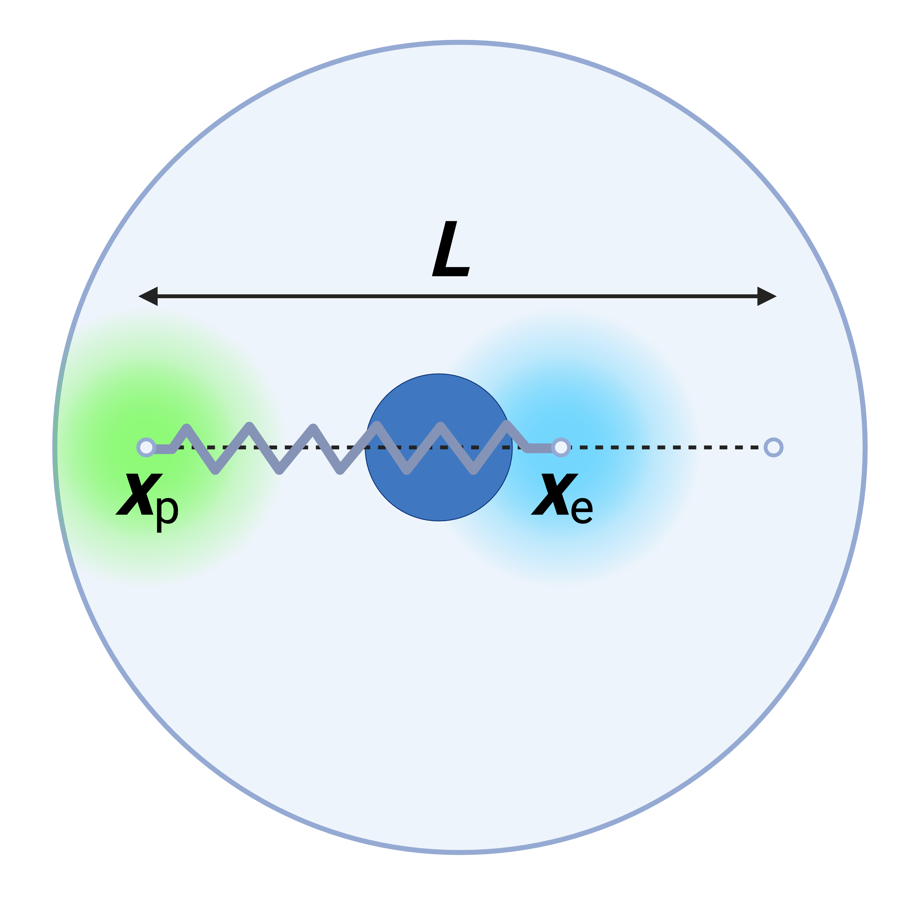

Coupled enhancer-promoter condensates
1 Dimensional Asymmetric Double-Well
\[F_{DW}(\rho_p , a , b)+\cdots = \int d^2x \bigg[\rho_p (\phi_p -a)^2(\phi_p -b)^2-\chi \phi_p \phi_r+c \phi_p^2 \phi_r^2+\rho_r\phi_r^2+\frac{\kappa}{2}(\nabla\phi_p)^2\bigg]\]
With \(a<b\), \(a =0.1\), \(b = 0.7\), \(\phi_{p,+}=0.63\), \(\phi_{p,-}=0.13\), and \(\rho_p = 1\).
2 Dimensional Symmetric Double-Well
\[\begin{aligned} F_{DW}(c_0 , \alpha, \beta)+\cdots &= \int d^2x \bigg[\frac{\alpha}{4}(c-c_0)^4+\frac{\beta}{2}(c-c_0)^2+\frac{\lambda}{2}m^2 +\gamma m c\\ &+\frac{\kappa}{2}(\nabla c)^2- \chi_{PD} \exp (- |\vec r - \vec r_e |^2/2 \sigma^2) c \bigg]+ \frac{3k_B T}{2L_CL_P}|\vec r_e - \vec r_p|^2 \end{aligned}\]
3 Symmetric PFStability Non-Dimensional
\[\tilde F_{DW}(\bar c_1, \tilde \beta) +\cdots= \int d^2x \bigg[\frac{1}{4}(\tilde c_1-\bar c_1)^4+\frac{\tilde \beta}{2}(\tilde c_1-\bar c_1)^2+\frac{\tilde \lambda}{2}c_2^2 +\tilde \gamma c_1 c_2+\frac{\tilde \kappa}{2}|\nabla c_1|^2-\tilde \chi_{PD} \exp (- |\vec r - \vec r_0 |^2/2 \sigma^2)\tilde c_1\bigg]+ \frac{\tilde k}{2}|\vec r_e - \vec r_p|\]
4 Symmetric Binodal Points
\[\begin{aligned} \frac{\partial}{\partial c}\left[\frac{\alpha}{4}(c-c_0)^4+\frac{\beta}{2}(c-c_0)^2\right]&=0\\ \alpha(c-c_0)^3+\beta (c-c_0)&=0\\ \alpha (c-c_0)\left(c-c_0+\sqrt{-\beta/\alpha}\right)\left(c-c_0-\sqrt{-\beta/\alpha}\right)&=0 \end{aligned}\] \[c = c_0 \pm \sqrt{-\beta/\alpha}\]
5 Asymmetric-Symmetric Conversion (Dimensional)
\[\begin{aligned} \rho_p (\phi_p -a)^2(\phi_p -b)^2&= \rho_p (\phi_p^2 - 2a \phi_p+a^2)(\phi_p^2 - 2b \phi_p+b^2)\\ &=\rho_p (\phi_p^4 +(-2a -2 b)\phi_p ^3+(a^2 + b^2 +4ab)\phi_p^2 \\ &+(-2a^2 b -2a b^2)\phi_p+a^2b^2)\\ &=\rho_p\phi_p^4 +\rho_p(-2a -2 b)\phi_p ^3+\rho_p(a^2 + b^2 +4ab)\phi_p^2 \\ &+\rho_p(-2a^2 b -2a b^2)\phi_p+\rho_pa^2b^2\\ \end{aligned}\]
\[\begin{aligned} \frac{\alpha}{4}(c-c_0)^4+\frac{\beta}{2}(c-c_0)^2& = \frac{\alpha}{4}(c^4-4c_0c^3+6c_0^2c^2-4c_0^3c+c_0^4)+ \frac{\beta}{2}(c^2 - 2c_0c+c_0^2)\\ & = \left(\frac{\alpha}{4}\right)c^4 +\left(-\alpha c_0 \right)c^3 + \left(\frac{3}{2}\alpha c_0^2+\frac{\beta}{2}\right)c^2\\ &+\left(-\alpha c_0^3 -\beta c_0 \right)c + \left(\frac{\alpha}{4}c_0^4+\frac{\beta}{2}c_0^2\right) \end{aligned}\]
\[\rho_p= \frac{\alpha}{4} \tag{1}\] \[\rho_p (-2a -2b)= -\alpha c_0 \tag{2}\] \[\rho_p(a^2 + b^2 +4ab)=\frac{3}{2}\alpha c_0^2+\frac{\beta}{2} \tag{3}\] \[\rho_p(-2a^2 b -2a b^2) = \left(-\alpha c_0^3 -\beta c_0 \right) \tag{4}\] \[\rho_pa^2b^2=\left(\frac{\alpha}{4}c_0^4+\frac{\beta}{2}c_0^2\right) \tag{5}\]
Substitute Equation 1 to Equation 2. \[\frac{\alpha}{4}(-2a-2b)=-\alpha c_0\] \[c_0 = \frac{a+b}{2} \tag{6}\] Substitute Equation 6 to Equation 4. \[\rho_p 2ab(a+b)=\frac{a+b}{2} \left[\alpha \left(\frac{a+b}{2}\right)^2 + \beta\right]\]
\[16\rho_p ab=\alpha (a^2+2ab+b^2) + 4\beta \tag{7}\] Substitute Equation 7 to Equation 3 \[\rho_p(a^2 + b^2 +4ab)=\frac{3}{2}\alpha \left(\frac{a+b}{2}\right)^2+\frac{\beta}{2}\]
\[8\rho_p(a^2 + b^2 +4ab)=3\alpha \left(a^2+2ab+b^2\right)+4\beta \tag{8}\]
Subtract Equation 7 and Equation 8.
\[8 \rho_pa^2 + 8 \rho_p b^2 +16 \rho_p ab=2\alpha (a^2 + 2ab + b^2)\]
\[\alpha =\frac{8 \rho_pa^2 + 8 \rho_p b^2 +16 \rho_p ab}{2(a^2 + 2ab + b^2)}=\frac{8\rho_p (a+b)^2}{2(a+b)^2}= 4\rho_p \]
This is consistent with Equation 1. Substitute to Equation 7.
\[16\rho_p ab=4 \rho_p (a^2+2ab+b^2) + 4\beta\]
\[-4 \rho_p (a^2-2ab+b^2)= 4\beta\]
\[\beta=-\rho_p (a-b)^2 \tag{9}\] We have used Equation 1, Equation 2, Equation 4. Check with Equation 3, Equation 5.
For Equation 3: \[LHS=\rho_p(a^2 + b^2 +4ab)\]
\[\begin{aligned} RHS&=\frac{3}{2}\alpha c_0^2+\frac{\beta}{2} = \frac{3}{2}(4 \rho_p )\left(\frac{a+b}{2}\right)^2-\frac{\rho_p (a-b)^2}{2}\\ &=\frac{3}{2}\rho_p (a+b)^2-\frac{\rho_p}{2} (a-b)^2=\rho_p (a^2+4ab+b^2) \end{aligned}\]
\(LHS=RHS\) consistent with Equation 3.
For Equation 5: \[LHS=\rho_pa^2b^2\]
\[\begin{aligned} RHS&=\left(\frac{\alpha}{4}c_0^4+\frac{\beta}{2}c_0^2\right)= \rho_p \frac{(a+b)^4}{16}-\frac{\rho_p}{2}(a-b)^2\frac{(a+b)^2}{4}\\ & = \frac{\rho_p}{16} (a+b)^2\left[(a+b)^2-2(a-b)^2\right] \end{aligned}\]
\[LHS \neq RHS\]
Equations differ by a scalar, which is not important in free energy gradients.
\[LHS-RHS = \rho_p \left[a^2b^2 - \frac{1}{16} (a+b)^2\left\{(a+b)^2-2(a-b)^2\right\}\right]\]
Hence, \[\begin{cases} \alpha = 4 \rho_p\\ \beta = -\rho_p (a-b)^2\\ c_0 = 0.5(a+b) \end{cases}\]
Likewise, \[\begin{cases} \rho_p = 0.25 \alpha\\ a =c_0 - \sqrt{-\beta/\alpha}\\ b = c_0 + \sqrt{-\beta/\alpha} \end{cases}\]
6 Non-dimensionalize Symmetric Double-Well
Use the following characteristic scales \[\begin{aligned}\ [C]&=(c_0/\bar c)& [T]&=\frac{1}{k_d}& [L]&=\sqrt{M_m\lambda/k_d}& [E]&=[\alpha][C]^4[L^2]& \end{aligned}\]
This is a functional derivative
\[\partial_t c=M_c\nabla^2\left(\frac{\delta F}{\delta c}\right)=M_c\nabla^2\left(\alpha (c-c_0)^3 + \beta (c-c_0)+ \gamma m -k \nabla^2 c\right)\] \[\partial_t m=M_m\lambda\nabla^2 m+k_p(\vec{r})c-k_dm\]
\[\begin{aligned}\tilde c &= \frac{c}{c_0/\bar c}& \tilde m &= \frac{m}{c_0/\bar c}& \tilde t &= k_d t& k &= \frac{k_p}{k_d}& \tilde{r} &= \frac{r}{l_{\text{RNA}}}=\frac{r}{\sqrt{M_m \lambda/k_d}} \end{aligned}\]
\[\partial_{\tilde t} \tilde c=\frac{M_c}{k_d}\nabla^2\left(\alpha (c_0/\bar c)^2(\tilde c-\bar c)^3 + \beta (\tilde c-\bar c)+ \gamma \tilde m -\kappa \nabla^2 \tilde c\right)\]
\[\partial_{\tilde t} \tilde c=\frac{M_c\alpha (c_0/\bar c)^2}{M_m \lambda}\tilde \nabla^2\left((\tilde c-\bar c)^3 + \beta\frac{1}{\alpha (c_0/\bar c)^2} (\tilde c-\bar c)+ \gamma\frac{1}{\alpha (c_0/\bar c)^2} \tilde m -\kappa \frac{1}{\alpha (c_0/\bar c)^2 } \frac{k_d}{M_m}\tilde \nabla^2 \tilde c\right)\]
\[\partial_{\tilde t} \tilde c=M\tilde \nabla^2\left((\tilde c-\bar c)^3 +\tilde \beta (\tilde c-\bar c)+ \tilde \gamma \tilde m - \tilde \kappa \nabla^2 \tilde c\right)\]
\[\begin{aligned} M &= \frac{M_c\alpha (c_0/\bar c)^2}{M_m \lambda}& \tilde \beta &= \beta\frac{1}{\alpha (c_0/\bar c)^2}& \tilde \gamma &= \gamma\frac{1}{\alpha (c_0/\bar c)^2}& \tilde \kappa &= \frac{\kappa }{\alpha (c_0/\bar c)^2}\frac{k_d}{M_m} \end{aligned}\]
\[\partial_{\tilde t} \tilde m=\frac{M_m\lambda}{k_d}\tilde \nabla^2 \tilde m+k\tilde c-\tilde m\]
\[\partial_{\tilde t} \tilde m=\tilde \nabla^2 \tilde m+k\tilde c-\tilde m\]
7 Dimensionless Enhancer Dynamics
Notice the change in notation from the dimensional to dimensionless equation. I’m shifting the notation form Pradeep’s notes to the documentation in the PFStability code.
\[\begin{aligned} F_{DW}(c_0 , \alpha, \beta) &= \int d^2x \bigg[\frac{\alpha}{4}(c-c_0)^4+\frac{\beta}{2}(c-c_0)^2+\frac{\lambda}{2}m^2 +\gamma m c\\ &+\frac{\kappa}{2}(\nabla c)^2- \chi_{PD} \exp (- |\vec r - \vec r_e |^2/2 \sigma^2) c \bigg]+ \frac{3k_B T}{2L_CL_P}|\vec r_e - \vec r_p|^2 \end{aligned}\]
\[\begin{aligned} \tilde F(\tilde c_1,\tilde c_2,\vec r_e)&=\frac{F}{\alpha (c_0/\bar c)^4 (M_m\lambda/k_d)}= \int d^2{\tilde x} \bigg[\frac{1}{4}(\tilde c_1-\bar c_1)^4+\frac{\tilde \beta}{2}(\tilde c_1-\bar c_1)^2+\frac{\tilde \lambda}{2}\tilde c_2^2 +\tilde \gamma \tilde c_1 \tilde c_2+\frac{\tilde \kappa}{2}|\tilde \nabla \tilde c_1|^2\\ &-\tilde \chi_{PD} \exp (- |\vec {\tilde r} - \vec {\tilde r_e} |^2/2 \tilde \sigma^2)\tilde c_1 \bigg]+ \frac{\tilde k}{2}|\vec {\tilde r_e} - \vec {\tilde r_p}|^2 \end{aligned}\]
Recall our characteristic concentration, time, length, and energy scales. Note that \(\bar c\) is dimensionless. \[\begin{aligned}\ [\bar c]&=1& [C]&=(c_0/\bar c)& [T]&=\frac{1}{k_d}& [L]&=\sqrt{M_m\lambda/k_d}& [E]&=[\alpha][C]^4[L^2] \end{aligned}\]
\[F = [E]\tilde F = \alpha (c_0/\bar c)^4 (M_m\lambda/k_d) \tilde F\]
\[[\chi_{PD}]=\frac{[E]}{[L]^2[C]}=[\alpha][C^3]=\alpha(c_0/\bar c)^3\]
\[\chi_{PD}=[\chi_{PD}]\tilde c=\alpha(c_0/\bar c)^3\tilde c\]
\[[M_D]=\frac{[\partial_{\vec r_e}]}{[\nabla _{\vec x_e}F]}=\frac{[L]/[T]}{[E]/[L]}=\frac{[L]^2}{[E][T]}=\frac{[L]^2}{[\alpha][C]^4[L^2][T]}=\frac{1}{[\alpha][C]^4[T]}= \frac{k_d}{\alpha (c_0/\bar c)^4}\]
\[M_D = [M_D] \tilde M_D = \frac{k_d}{\alpha (c_0/\bar c)^4} \tilde M_D\]
This is a partial derivative (gradient) \[\partial_t\vec r_e=-M_D\vec \nabla_{\vec r_e}F=M_D \int d^2 x \left[\chi_{PD}c_1\left(\frac{\vec r - \vec r_e}{\sigma^2}\right)\exp \left(- \frac{|\vec r - \vec r_e|^2}{2 \sigma^2}\right)\right]- M_D \frac{3 k_B T}{L_P L_C} (\vec r_e - \vec r_p)\]
\[\begin{aligned} k_d\left(\sqrt{M_m\lambda/k_d}\right)\partial_{\tilde t}{\vec {\tilde r_e}} &= M_D \int d^2 {\tilde x} (M_m\lambda/k_d) \bigg[\chi_{PD}c_1\bigg(\frac{1}{\sqrt{M_m\lambda/k_d}}\frac{\vec {\tilde r} - \vec {\tilde r_e}}{{\tilde \sigma}^2}\bigg)\exp \bigg(- \frac{|\vec {\tilde r}-\vec {\tilde r_e}|^2}{2 {\tilde \sigma}^2}\bigg)\bigg]\\ &- M_D \frac{3 k_B T}{L_P L_C} \left( \sqrt{M_m\lambda/k_d}\right) (\vec {\tilde r_e} - \vec {\tilde r_p}) \end{aligned}\]
\[\partial_{\tilde t}{\vec {\tilde r_e}} = \frac{M_D}{k_d} \int d^2 {\tilde x} \left[\chi_{PD}c_1\left(\frac{\vec {\tilde r} - \vec {\tilde r_e}}{{\tilde \sigma}^2}\right)\exp \left(- \frac{|\vec {\tilde r} - \vec {\tilde r_e}|^2}{2 {\tilde \sigma}^2}\right)\right]- \frac{M_D}{k_d} \frac{3 k_B T}{ L_PL_C} (\vec {\tilde r_e} - \vec {\tilde r_p})\]
\[\begin{aligned} \partial_{\tilde t}{\vec {\tilde r_e}} &= \left\{\frac{M_D \alpha (c_0/\bar c)^4}{k_d}\right\} \int d^2 {\tilde x} \left[ \left\{\frac{\chi_{PD}}{\alpha (c_0/\bar c)^3}\right\} \left\{\frac{c_1}{(c_0/\bar c)}\right\}\left(\frac{\vec {\tilde r} - \vec {\tilde r_e}}{{\tilde \sigma}^2}\right)\exp \left(- \frac{|\vec {\tilde r} - \vec {\tilde r_e}|^2}{2 {\tilde \sigma}^2}\right)\right]\\ &- \left\{\frac{M_D \alpha (c_0/\bar c)^4}{k_d}\right\} \left\{\frac{3 k_B T}{ L_PL_C }\frac{1}{\alpha (c_0/\bar c)^4}\right\} (\vec {\tilde r_e} - \vec {\tilde r_p}) \end{aligned}\]
\[\partial_{\tilde t}{\vec {\tilde r_e}} = \tilde M_D \int d^2 {\tilde x} \left[\tilde \chi_{PD}\tilde c_1\left(\frac{\vec {\tilde r} - \vec {\tilde r_e}}{{\tilde \sigma}^2}\right)\exp \left(- \frac{|\vec {\tilde r} - \vec {\tilde r_e}|^2}{2 {\tilde \sigma}^2}\right)\right]- \tilde M_D \tilde k (\vec {\tilde r_e} - \vec {\tilde r_p})\]
\[\begin{aligned} \tilde M_D &= \frac{M_D \alpha (c_0/\bar c)^4}{k_d}& \tilde k &= \frac{3 k_B T}{L_PL_C }\frac{1}{\alpha (c_0/\bar c)^4}& \tilde c &= \frac{\chi_{PD}}{\alpha (c_0/\bar c)^3}& \end{aligned}\]
8 Protein/RNA Coupled Dynamics
\[\tilde F= \int d^2x \bigg[\frac{1}{4}(\tilde c_1-\bar c_1)^4+\frac{\tilde \beta}{2}(\tilde c_1-\bar c_1)^2+\frac{\tilde \lambda}{2}{\tilde c_2}^2 +\tilde \gamma \tilde c_1 \tilde c_2+\frac{\tilde \kappa}{2}|\tilde \nabla \tilde c_1|^2-\tilde \chi_{PD} \exp (- |\vec {\tilde r} - \vec {\tilde r_0} |^2/2 {\tilde \sigma}^2)\tilde c_1\bigg]+ \frac{\tilde k}{2}|\vec {\tilde r_e} - \vec {\tilde r_p}- \vec {\tilde l}|\]
\[\partial_{\tilde t} \tilde c_1=M\tilde \nabla^2\left((\tilde c_1-\bar c)^3 +\tilde \beta (\tilde c_1-\bar c)+ \tilde \gamma \tilde c_2 - \tilde \kappa \nabla^2 \tilde c_1-\tilde \chi_{PD}\exp (- |\vec {\tilde r} - \vec {\tilde r_0} |^2/2 {\tilde \sigma}^2)\right)\] \[\partial_{\tilde t} \tilde c_2=\tilde \nabla^2 \tilde c_2+k\tilde c_1-\tilde c_2\] \[\partial_{\tilde t}{\vec {\tilde r_e}} = \tilde M_D \int d^2 {\tilde x} \left[\tilde \chi_{PD}\tilde c_1\left(\frac{\vec {\tilde r} - \vec {\tilde r_e}}{{\tilde \sigma}^2}\right)\exp \left(- \frac{|\vec {\tilde r} - \vec {\tilde r_e}|^2}{2 {\tilde \sigma}^2}\right)\right]- \tilde M_D \tilde k (\vec {\tilde r_e} - \vec {\tilde r_p}- \vec {\tilde l})\]
9 Protein-Enhancer Coupling Steady State
\[0 = \tilde M_D \int d^2 {\tilde x} \left[\tilde \chi_{PD}\tilde c_1\left(\frac{\vec {\tilde r} - \vec {\tilde r_e}}{{\tilde \sigma}^2}\right)\exp \left(- \frac{|\vec {\tilde r} - \vec {\tilde r_e}|^2}{2 {\tilde \sigma}^2}\right)\right]- \tilde M_D \tilde k (\vec {\tilde r_e} - \vec {\tilde r_p}- \vec {\tilde l})\] \[\frac{\tilde k}{\tilde \chi_{PD}} = \frac{ \displaystyle \int d^2 {\tilde x} \left[\tilde c_1\left(\frac{\vec {\tilde r} - \vec {\tilde r_e}}{{\tilde \sigma}^2}\right)\exp \left(- \frac{|\vec {\tilde r} - \vec {\tilde r_e}|^2}{2 {\tilde \sigma}^2}\right)\right]}{(\vec {\tilde r_e} - \vec {\tilde r_p}- \vec {\tilde l})}\]

10 Re-entrant term
\[\tilde F= \int d^2x \bigg[\frac{1}{4}(\tilde c_1-\bar c_1)^4+\frac{\tilde \beta}{2}(\tilde c_1-\bar c_1)^2+\frac{\tilde \lambda}{2}c_2^2 +\tilde \gamma c_1 c_2+\frac{\tilde \chi_{PR}}{2} c_1^2c_2^2+\frac{\tilde \kappa}{2}|\tilde \nabla c_1|^2-\tilde \chi_{PD} \exp (- |\vec r - \vec r_0 |^2/2 \sigma^2)\tilde c_1\bigg]+ \frac{\tilde k}{2}|\vec r_e - \vec r_p|\]
\[\partial_{\tilde t} \tilde c_1=M\tilde \nabla^2\left((\tilde c_1-\bar c)^3 +\tilde \beta (\tilde c_1-\bar c)+ \tilde \gamma \tilde c_2 + \tilde \chi_{PR} c_1c_2^2 - \tilde \kappa \tilde \nabla^2 \tilde c_1 - \tilde \chi_{PD}\exp (- |\vec {\tilde r} - \vec {\tilde r_0} |^2/2 {\tilde \sigma}^2)\right)\]
\[\partial_{\tilde t} \tilde c_2=\tilde \nabla^2 \tilde c_2+k\tilde c_1-\tilde c_2\]
\[J = \begin{bmatrix}\partial_{c_1^2}F & \partial_{c_1c_2}F\\ \partial_{c_2c_1}F & \partial_{c_2^2}F\end{bmatrix}\]
\[J = \begin{bmatrix}3(\tilde c_1 - \bar c)^2+\beta+\tilde \chi_{PR}c_2^2 & \tilde \gamma + 2 \tilde \chi_{PR} c_1 c_2\\ \tilde \gamma + 2\tilde \chi_{PR} c_1 c_2 & \tilde \chi_{PR}c_1^2\end{bmatrix}\]